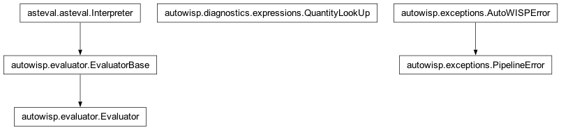
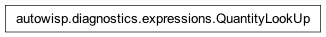

autowisp.diagnostics.expressions module
Class Inheritance Diagram

Named expressions over per-image diagnostics, evaluated in dependency order.
This is the whole of what an expression means: which names it references,
what order a library of them has to be evaluated in, and what is wrong with
one. It deliberately knows about no database of any kind. The library
arrives as a {name: expression} dictionary and the data as a
{diagnostic_name: array} dictionary, so the same rules apply whether the
caller is the browser interface reading its own database or a pipeline step
handed a library from a file.
Passing the values in rather than fetching them is what keeps this module free of a database and cheap to test exhaustively; it is not a facility for supplying diagnostics by hand. Building those arrays – NaN-padded onto one canonical image list so that index i is the same image in every one of them – belongs to the layer above.
- class autowisp.diagnostics.expressions.QuantityLookUp(name, shared, *, definition=None, computed=None)[source]
Bases:
object
One name an expression may read, resolved when it is asked for.
Everything a quantity needs is held here: a diagnostic owns the values fetched for it, an expression owns its text and the instantiations it has computed. Asking the top-level lookup for its channels is therefore the whole of evaluation – there is no separate pass, and no state threaded through one.
A diagnostic is the degenerate case rather than a second kind of thing: every instantiation of it is known before evaluation starts, so it arrives with its cache full and its text never consulted.
Built through
library()rather than one at a time, because the lookups of one evaluation share a binding stack and an evaluator, and both are this class’s business rather than its caller’s.- __getitem__(slots)[source]
Resolve
name[slots]as the body being evaluated means it.Python passes
1forx[1]and(1, 2)forx[1,2], so the shapes take care of themselves. The binding read is the top of the stack, which is always the body asking: a nested evaluation finishes in here before the outer body’s next operand is touched.
- __init__(name, shared, *, definition=None, computed=None)[source]
- Parameters:
name (str) – What the expressions call it, used for error messages only – nothing resolves by it.
shared (tuple) – The binding stack and evaluator this evaluation’s lookups share, from
library().definition (tuple) – The expression text and its parameters, or
Nonefor a diagnostic, which has neither because it is never evaluated.computed (dict) –
channels -> arrayknown in advance: the whole of a diagnostic, and empty for an expression.
- at(channels)[source]
Return this quantity with its parameters bound to channels.
The cache is what makes an instantiation wanted twice – by two references, or by two different expressions – computed once. For a diagnostic it is also the whole of the answer, so a miss means the values were never fetched rather than that something needs computing, and is reported rather than repaired: it means
get_needed_values()and whatever fetched disagree.Nothing here guards against a reference cycle:
order_expressions()refuses one statically, on names, and that is exact rather than conservative, since substitution permutes a finite parameter set and introduces no new symbols.- Parameters:
channels (tuple) – One channel per parameter, in order.
- Returns:
The values, over the canonical image list.
- Return type:
numpy.ndarray
- Raises:
PipelineError – If a diagnostic was not fetched for this channel.
- classmethod library(expressions, values)[source]
Return
{name: lookup}for one evaluation, ready to be asked.The binding stack and the evaluator are created here and captured by the lookups, so neither is named outside this class. The stack is how a lookup finds the binding of the body asking it, which is nobody else’s concern; and it must belong to one evaluation rather than to the class, or two plots drawn at once would interleave their bindings on it and return wrong numbers rather than failing.
The evaluator does not come back out either: handing it over would hand over a symbol table full of lookups, and with it a way to evaluate arbitrary text with none of the parameter machinery.
- Parameters:
expressions (dict) – The library,
{name: expression}.values (dict) –
{name: {channels: array}}, as fetched for one series, keyed exactly asget_needed_values()asked.
- Returns:
A lookup per name, sharing one evaluation’s state.
- Return type:
- autowisp.diagnostics.expressions._as_series(values, count)[source]
Return values as an array of count entries.
A constant-valued expression evaluates to a scalar, which still has to plot as a series, so it is broadcast to the image count.
- autowisp.diagnostics.expressions._canonical_length(values)[source]
Return the length of the image list values are padded onto.
- autowisp.diagnostics.expressions._evaluation_order(targets, expressions)[source]
Return the expressions to evaluate, each after what it references.
A depth-first walk from targets, appending a name only once the expressions it references have been appended. Only what the targets reach is visited, so asking for one expression does not drag in the whole library.
Appending on the way out is what makes this an order rather than a traversal. On the way in, two expressions reached at the same depth are indistinguishable even when one references the other: with
a = b + candc = b * 2, bothbandcare reached fromatogether, so reversing the order of discovery can placecbefore thebit needs.- Raises:
PipelineError – On a reference cycle, naming the loop.
- autowisp.diagnostics.expressions._evaluator_names()[source]
Return the names a bare
Evaluatoralready defines.
- autowisp.diagnostics.expressions._get_bare_names(expression)[source]
Return the names expression reads without a subscript.
The complement of
get_indexed_names(), so between them everyast.Nameis accounted for once. Mostly functions.
- autowisp.diagnostics.expressions._needed_diagnostics(targets, references, expressions)[source]
Return the diagnostics to fetch, rejecting names that resolve to nothing.
- Raises:
PipelineError – If any referenced name is neither an expression, a diagnostic, nor an evaluator builtin.
- autowisp.diagnostics.expressions._slot_problems(expression, library)[source]
Return what is wrong with how expression reads its quantities.
One rule: a quantity is read with exactly as many channel slots as it takes, and one taking none is read bare. The first half is what makes a reference’s arguments match a definition’s parameters positionally; the second is what lets
get_needed_values()andQuantityLookUp.library()treat a bare name as a value and still know they have seen everything.Only names resolving to a quantity are judged, in either direction: the evaluator’s own arrays can be indexed too, and most bare names are its functions.
- Parameters:
- Returns:
Descriptions of the problems; empty if there are none.
- Return type:
- Raises:
PipelineError – From
get_indexed_names(), if an index does not name a channel slot at all.
- autowisp.diagnostics.expressions._spell_slots(count)[source]
Return count channel slots, spelled for a message.
- autowisp.diagnostics.expressions._visit_needed(name, channels, expressions, needed)[source]
Add what name bound to channels reads, recursively.
- autowisp.diagnostics.expressions.check_expression(name, expression, current_library)[source]
Return what is wrong with a proposed expression, as plain strings.
Problems are returned rather than raised so that this module stays free of any particular presentation: the browser interface turns them into a
ValidationError, an importer collects them per entry.No project is needed. What a name may mean comes from
autowisp.diagnostics.diagnostic_types, which is complete: adiagnostic_typerow is either seeded from the static catalogue at project creation or created by thepixel_q*branch of_save_image_diagnostics, which refuses every other name. So no project can contain a diagnostic this does not know, and an expression means the same thing everywhere – which is what lets one library be shared by every project.Whether an expression is usable in a particular project is a different question, about whether rows have been recorded, and is answered by counting them rather than here.
- Parameters:
- Returns:
Descriptions of the problems; empty if there are none.
- Return type:
- autowisp.diagnostics.expressions.evaluate_quantities(wanted, expressions, values)[source]
Evaluate the quantities of one series, each bound to its channels.
- Parameters:
wanted (dict) –
{quantity: set of channel tuples}, as the table bound them and asget_needed_values()takes them. Asking for both axes at once is what lets an instantiation they share be computed once.expressions (dict) – The library,
{name: expression}.values (dict) –
{name: {channels: array}}, every array on one canonical image list, holding whatget_needed_values()asked for and keyed the same way.
- Returns:
{quantity: {channels: array}}, all of the samelength – the shape values arrives in, being the same kind of thing: a quantity read in the channels asked for.
- Return type:
- Raises:
PipelineError – If a quantity resolves to nothing, if the expressions reference each other in a cycle, or if values lacks something they read.
- autowisp.diagnostics.expressions.get_bare_aggregates(expression)[source]
Return the NaN-propagating aggregates an expression calls.
Every array is NaN-padded to the canonical image list, so a plain
medianover one goes NaN as soon as a single image lacks the diagnostic – which is usual rather than exceptional. Callers use this to warn, not to refuse: a deliberatemedianis still a legitimate thing to write.- Parameters:
expression (str) – The expression text.
- Returns:
The names called without their
nanprefix.- Return type:
- Raises:
SyntaxError – As for
get_expression_names().
- autowisp.diagnostics.expressions.get_expression_dependents(name, expressions)[source]
Return the expressions referencing name, for the delete guard.
- autowisp.diagnostics.expressions.get_expression_names(expression)[source]
Return every name one expression mentions, functions included.
nanmedian(rel)gives{"nanmedian", "rel"}: a call by bare name is anast.Callwhosefuncis anast.Name, so there is nothing here to tell a function from a variable, and no attempt is made to. Which is which cannot be decided from the text anyway – it depends on the open project’s diagnostics, on what else the library holds, and on the evaluator’s symbol table – so the split is left to the caller, which is whatorder_expressions()andcheck_expression()both do.- Parameters:
expression (str) – The expression text.
- Returns:
- The
ast.Nameidentifiers, whether they are used as values or called.
- The
- Return type:
- Raises:
SyntaxError – If the text is not a single Python expression.
mode="eval"rejects statements, assignments, loops and imports, which is worth having but is not what makes evaluating an expression safe:__import__('os').listdir('.')is a perfectly valid expression. Safety comes fromautowisp.evaluator.EvaluatorBase– asteval refuses imports,eval,exec,getattrand dunder traversal, and AutoWISP dropsopenandprinton top – and fromcheck_expression()restricting names to that symbol table plus the project’s diagnostics.
- autowisp.diagnostics.expressions.get_expression_parameters(expression)[source]
Return the channel slots one expression takes, in order.
Derived from the body rather than declared: the parameters are the slot numbers it mentions, so there is nothing to keep in step and nothing extra to store.
bg_center[0] / bg_center[1]takes(0, 1);sky_color[0,1] - sky_color[1,2]takes(0, 1, 2).Sorted, which is what makes the order well defined when a body writes its slots out of sequence – and the order matters, since a reference’s arguments are matched onto these positionally.
- Parameters:
expression (str) – The expression text.
- Returns:
- The distinct slot numbers, ascending. Empty for an
expression that reads no channel at all.
- Return type:
- Raises:
SyntaxError, PipelineError – As for
get_indexed_names().
- autowisp.diagnostics.expressions.get_indexed_names(expression)[source]
Return what one expression reads, and in which channel slots.
A slot is written as a subscript –
bg_center[0], orsky_color[0,1]for a quantity taking two – and the numbers are that expression’s own formal parameters, bound to real channels only when something is plotted. So this reports the shape of what the text asks for, and says nothing about channels.- Parameters:
expression (str) – The expression text.
- Returns:
(name, slots)pairs in the order they appear, slotsalways a tuple however many were written. Repeats are kept:
sky_color[0,1] - sky_color[1,2]reads one name at two different slot pairs, which is the whole point of the parameters being formal.
- Return type:
- Raises:
SyntaxError – As for
get_expression_names().PipelineError – If a subscript is not a plain name indexed by integer literals. Anything else –
bg_center[i],bg_center[1:2],sky_color[1][2]– cannot name a channel slot, and saying so here is clearer than letting it fail as an unresolvable name later.
- autowisp.diagnostics.expressions.get_needed_values(wanted, expressions)[source]
Return the diagnostics to read, and in which channels.
Runs before anything is evaluated, for two callers that both need the answer without it:
whatever reads the values does so for a whole series in one query, so it cannot discover them as it goes;
the table above a plot counts the images recording all of them, which is a question about rows and must never evaluate an expression – there is a table row per observing session and image type, so evaluating per row would be work proportional to the whole image collection.
It walks what evaluation walks, resolving each reference’s arguments through the binding of the body holding it, and stops at the diagnostics.
- Parameters:
wanted (dict) –
{quantity: set of channel tuples}, each tuple holding one channel per parameter of that quantity. A set because one quantity may be wanted at two bindings at once:bg_centerin R againstbg_centerin B is a plot of a diagnostic between channels.expressions (dict) – The library,
{name: expression}.
- Returns:
{name: set of channel tuples}– the same shape ittakes, which is what it means: what is wanted, resolved into what must be read. One entry per diagnostic, holding every combination it is read in, plus
time_quantitywith the empty tuple where an expression reads the time.
- Return type:
- Raises:
PipelineError – On a reference cycle, on a name that resolves to nothing, or on a binding of the wrong length for what it binds.
- autowisp.diagnostics.expressions.get_quantity_arity(name, expressions)[source]
Return how many channels name has to be bound to before it can be read.
Only one of the three answers is data. A diagnostic is recorded once per channel, so it takes exactly one;
time_quantityis recorded once per image and takes none; and an expression takes however many slots its body mentions, which is the only part worth deriving.The table above a plot asks this to know how many channel dropdowns an axis needs.
- Parameters:
- Returns:
The number of channels to bind.
- Return type:
- Raises:
PipelineError – If name is neither a diagnostic nor an expression nor the time.
- autowisp.diagnostics.expressions.order_expressions(targets, expressions)[source]
Return the order to evaluate targets in, and what data that needs.
Only the dependency subtree of targets is walked, so asking for one expression does not evaluate the whole library.
What a name may mean comes from
is_known_quantity()rather than from a project, because it cannot differ between projects: adiagnostic_typerow is either seeded from the static catalogue or created by the quantile branch that refuses every other name. A diagnostic no image here records is therefore accepted and comes back all-NaN, which is what the padding is for.- Parameters:
targets – The quantity names wanted. Any that are not expressions are diagnostics, and pass through to the returned set.
expressions (dict) – The library,
{name: expression}.
- Returns:
list: Expression names, each after everything it references.
set: The diagnostics that have to be fetched for them.
- Return type:
- Raises:
PipelineError – On a reference cycle, or on a name that is neither an expression, a diagnostic, nor an evaluator builtin.
- autowisp.diagnostics.expressions.rename_references(expression, old_name, new_name)[source]
Return expression with every reference to old_name renamed.
A source-level edit, and the only rewriting anywhere in this feature. It does not contradict the rule that nothing is rewritten – that is about resolution, where an
ast.unparseroundtrip would leave a stored text and a resolved text to keep straight. Here the user has asked for the change, and what comes back is what they will read and edit from then on.So it must not reformat: the new identifier is spliced in at the exact source offsets
astreports, leaving every other byte alone. That is also what makes it safe where a textual replace is not –relinsiderel_bg, inside a string literal, or as a keyword argument’s name is left untouched, because onlyast.Namenodes are moved.- Parameters:
- Returns:
- The text with those references renamed, and identical
everywhere else.
- Return type:
- Raises:
SyntaxError – As for
get_expression_names().